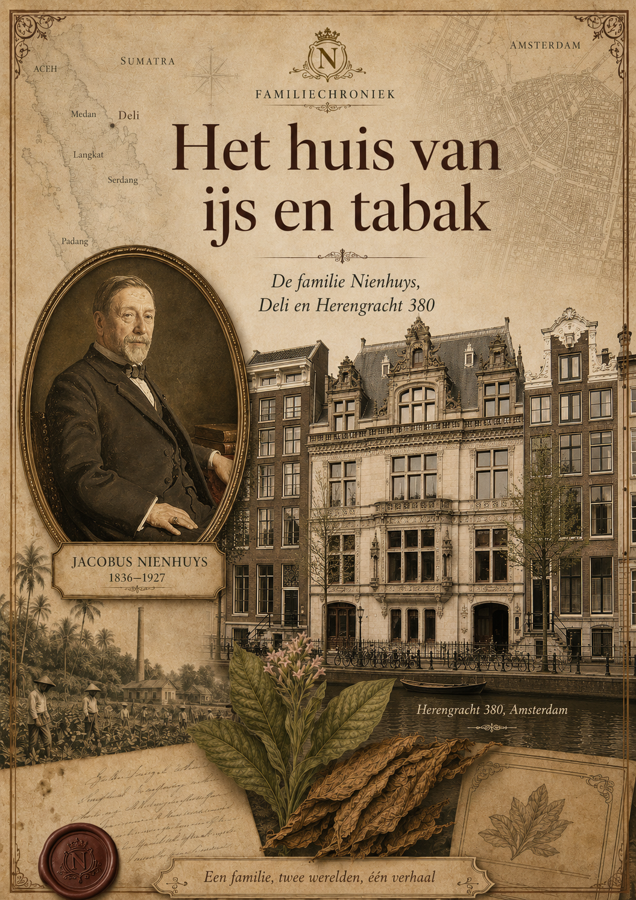

Aankomst in Deli
Jacobus Nienhuys arriveert aan de oostkust van Sumatra en ziet kansen voor tabaksteelt.
Familiechroniek
De familie Nienhuys, Deli en Herengracht 380–382
Dit project verzamelt tekst, beeld, bronnen en herinneringen rond Jacobus Nienhuys, de Deli-tabak, Medan en het Amsterdamse stadspaleis aan de Herengracht 380–382.
Het verhaal is nadrukkelijk geen heldenverhaal zonder schaduw. Het combineert familiegeschiedenis, koloniale geschiedenis, publieke herinnering en bronkritiek.

Onderstaande Indonesische video geeft een populair-historische samenvatting van de rol van Jacobus Nienhuys in Deli en Medan. De video is bruikbaar als hedendaagse herinneringslaag, maar moet bronkritisch worden gelezen.
Jacobus Nienhuys arriveert aan de oostkust van Sumatra en ziet kansen voor tabaksteelt.
De Deli Maatschappij wordt opgericht en groeit uit tot een machtige onderneming in de tabakscultuur.
In Amsterdam verrijst het stadspaleis van Nienhuys, ontworpen door Abraham Salm.
In Medan wordt Nienhuys herdacht als pionier, maar latere bronnen tonen ook de schaduwzijde.
De lijn Nienhuys loopt door in de familie Noë. Dit onderdeel krijgt een persoonlijke, niet-publieke toon.
Deli, tabak, Medan, arbeid, contractkoelies, de Deli Maatschappij en de koloniale economie.
Oude kranten zijn waardevol, maar vaak gekleurd door koloniale zelfrechtvaardiging.